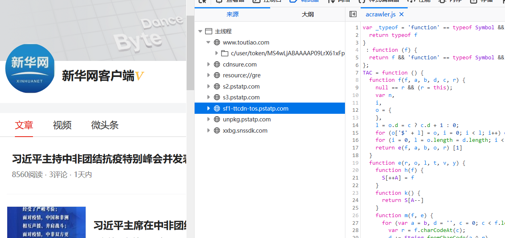

本文仅用于技术学习、交流，切莫用于非法用途，读者的一切行为后果自行承担。
背景
最近研究了一下某条的反爬。某条针对文章使用的是 Cookie 中的 _ac_nonce 和 __ac_signature，针对文章列表之类的 API 则是在 GET 请求的 URL 参数中带上签名参数 _signature。Cookie 中的签名和 URL 参数中的签名实际上都是使用 acrawler.js 来计算的。最新版的 acrawler.js 做了运行环境检测，使用各种 JS 执行器或者 node.js 都是无法模拟的（早先的版本在引入 jsdom 后是可以的），Selenium 也行不通。
搞了几天，总算是搞了出来，写几篇博文稍作记(zhuāng)录(bī)。
预先分析
首先抓下包，看看哪些参数需要分析，哪些可以在响应中获得。
首先是 Cookie 中的几个必要的参数，tt_webid 和 csrftoken 可以通过访问任意页面得到，而 s_v_web_id 和 __tasessionId 则需要通过 JS 来生成。其它 Cookie 都是非必须的。
另有一个比较奇怪的 Cookie tt_scid，需要通过接口 https://xxbg.snssdk.com/websdk/v1/getInfo?q=xxxxx&callback=xxx 来得到。而对这个接口的访问，似乎是无规律的，有时候会在第一次下拉时访问，有时候连续下拉几十次都不会访问。当这个 Cookie 存在时，请求签名会变长许多，并且根据初步观察，应该是把 tt_scid 处理后直接拼在请求签名的后面。初步猜测，访问 API 可以不带这个 Cookie，但是带上的时候，请求签名也要做相应的改变。
当同时带有上述 5 个 Cookie 时，访问文章列表 API 的 URL 如下：
'https://www.toutiao.com/c/user/article/'
+ '?page_type=1'
+ '&user_id=4377795668'
+ '&max_behot_time=1592405348'
+ '&count=20'
+ '&as=A1852E5E2A34233'
+ '&cp=5EEAA4E243238E1'
+ '&_signature=_02B4Z6wo00901Zk3vyAAAIBDh4Gslr-BX8WZMruAADirAYtjy4FBx.kn-WjOpZFHL7kk.k5jhE7G.0RtZrEs0QfJzqyDPSFbsF7ajiJFnci7Ch8.3PhAeIg8kBkzGyNM4xK17m35a9pOji2p10'其响应如下：
{
"login_status":false,
"has_more":true,
"next":{
"max_behot_time":1592402062
},
"page_type":1,
"message":"success",
"data":[
{
"image_url":"//p3.pstatp.com/list/190x124/pgc-image/S2BFDBP4Fu7oy4",
"single_mode":true,
"abstract":"英国卫生部16日宣布，即日起政府正式批准本国医疗体系使用地塞米松来治疗医院中那些需要吸氧以及使用呼吸机的新冠病患。地塞米松是一种人工合成的皮质类固醇，已被广泛用于治疗多种症状，如严重过敏、哮喘等，并且价格低廉。",
"image_list":[
{
"url":"//p3.pstatp.com/list/pgc-image/S2BFDBP4Fu7oy4",
"width":900,
"url_list":[
{
"url":"http://p3.pstatp.com/list/pgc-image/S2BFDBP4Fu7oy4"
},
{
"url":"http://pb9.pstatp.com/list/pgc-image/S2BFDBP4Fu7oy4"
},
{
"url":"http://pb1.pstatp.com/list/pgc-image/S2BFDBP4Fu7oy4"
}
],
"uri":"list/pgc-image/S2BFDBP4Fu7oy4",
"height":600
},
{
"url":"//p1.pstatp.com/list/pgc-image/S2BFDLTGFTHEbY",
"width":900,
"url_list":[
{
"url":"http://p1.pstatp.com/list/pgc-image/S2BFDLTGFTHEbY"
},
{
"url":"http://pb3.pstatp.com/list/pgc-image/S2BFDLTGFTHEbY"
},
{
"url":"http://pb9.pstatp.com/list/pgc-image/S2BFDLTGFTHEbY"
}
],
"uri":"list/pgc-image/S2BFDLTGFTHEbY",
"height":600
},
{
"url":"//p1.pstatp.com/list/pgc-image/S2BFDUT98KtRRn",
"width":900,
"url_list":[
{
"url":"http://p1.pstatp.com/list/pgc-image/S2BFDUT98KtRRn"
},
{
"url":"http://pb3.pstatp.com/list/pgc-image/S2BFDUT98KtRRn"
},
{
"url":"http://pb9.pstatp.com/list/pgc-image/S2BFDUT98KtRRn"
}
],
"uri":"list/pgc-image/S2BFDUT98KtRRn",
"height":600
}
],
"more_mode":true,
"tag":"news_health",
"tag_url":"news_health",
"title":"英国批准地塞米松用于治疗部分新冠病患",
"has_video":false,
"chinese_tag":"健康",
"source":"新华网客户端",
"group_source":2,
"comments_count":"1",
"composition":8,
"media_url":"/m4377795668/",
"go_detail_count":"97",
"middle_mode":false,
"gallary_image_count":0,
"detail_play_effective_count":"0",
"visibility":3,
"source_url":"/item/6839327530185392648/",
"item_id":"6839327530185392648",
"article_genre":"article",
"display_url":"//www.xinhuanet.com/photo/2020-06/17/c_1126127492.htm",
"behot_time":"1天内",
"has_gallery":false,
"group_id":"6839327530185392648"
}
// 省略19条
],
"is_self":false
}分析 URL 中的参数，page_type 是固定的，user_id 是文章发布者的 id，max_behot_time 则在上一次请求的响应中得到（首次取 0），count 可以固定取 20，as、cp 和 _signature 都需要通过 JS 生成。
于是，需要逆向分析的一共有 s_v_web_id、__tasessionId、as、cp 和 _signature 这 5 个变量，显然 _signature 会是最难搞的。
经过简单的分析（过程略），可以发现 s_v_web_id、__tasessionId、as、cp 这几个变量都是通过 index_xxx.js 或者 lib_xxx.js 来生成的，这两个文件只做了简单的压缩，而没有做任何混淆和其它防护。它们的生成算法都比较简单，这里就不写了。
代码初步处理
扒掉外衣
首先把 acrawler.js 下载下来，本地写一个 html 引入它，用浏览器打开，然后把 JS 格式化：
整串代码的形式为 Function(code)()，也就是执行代码 code。这里 code 的形式为：
function (t) {
return '...这里是一个很长的加密字符串...'.replace(/[\u0010-\u001f]/g, function (m) {
return t[m.charCodeAt(0) & 15]
})
}('var \u0010function \u0010()\u0010.length\u0010++\u0010return \u0010))\u0010;break;case \u0010;else{'.split('\u0010'))显然，是通过正则替换得到代码。
拿到控制台去跑一下：
这样就拿到了 Function(code)() 里面的代码。
再格式化一下，得到这样的一段代码：
var w = function () {
function S(S, K) {
if (!a[S]) {
a[S] = {
};
for (var y = 0; y < S.length; y++) a[S][S.charAt(y)] = y
}
return a[S][K]
}
var K = String.fromCharCode,
a = {
},
y = {
x: function (K) {
return null == K ? '' : '' == K ? null : y.y(K.length, 32, function (a) {
return S('ABCDEFGHIJKLMNOPQRSTUVWXYZabcdefghijklmnopqrstuvwxyz0123456789+/=', K.charAt(a))
})
},
y: function (S, a, y) {
var p,
m,
o,
T,
l,
r,
k,
i = [],
J = 4,
q = 4,
j = 3,
I = '',
b = [],
z = {
val: y(0),
position: a,
index: 1
};
for (p = 0; p < 3; p += 1) i[p] = p;
for (o = 0, l = Math.pow(2, 2), r = 1; r != l; ) T = z.val & z.position,
z.position >>= 1,
0 == z.position && (z.position = a, z.val = y(z.index++)),
o |= (T > 0 ? 1 : 0) * r,
r <<= 1;
switch (o) {
case 0:
for (o = 0, l = Math.pow(2, 8), r = 1; r != l; ) T = z.val & z.position,
z.position >>= 1,
0 == z.position && (z.position = a, z.val = y(z.index++)),
o |= (T > 0 ? 1 : 0) * r,
r <<= 1;
k = K(o);
break;
case 1:
for (o = 0, l = Math.pow(2, 16), r = 1; r != l; ) T = z.val & z.position,
z.position >>= 1,
0 == z.position && (z.position = a, z.val = y(z.index++)),
o |= (T > 0 ? 1 : 0) * r,
r <<= 1;
k = K(o);
break;
case 2:
return ''
}
for (i[3] = k, m = k, b.push(k); ; ) {
if (z.index > S) return '';
for (o = 0, l = Math.pow(2, j), r = 1; r != l; ) T = z.val & z.position,
z.position >>= 1,
0 == z.position && (z.position = a, z.val = y(z.index++)),
o |= (T > 0 ? 1 : 0) * r,
r <<= 1;
switch (k = o) {
case 0:
for (o = 0, l = Math.pow(2, 8), r = 1; r != l; ) T = z.val & z.position,
z.position >>= 1,
0 == z.position && (z.position = a, z.val = y(z.index++)),
o |= (T > 0 ? 1 : 0) * r,
r <<= 1;
i[q++] = K(o),
k = q - 1,
J--;
break;
case 1:
for (o = 0, l = Math.pow(2, 16), r = 1; r != l; ) T = z.val & z.position,
z.position >>= 1,
0 == z.position && (z.position = a, z.val = y(z.index++)),
o |= (T > 0 ? 1 : 0) * r,
r <<= 1;
i[q++] = K(o),
k = q - 1,
J--;
break;
case 2:
return b.join('')
}
if (0 == J && (J = Math.pow(2, j), j++), i[k]) I = i[k];
else {
if (k !== q) return null;
I = m + m.charAt(0)
}
b.push(I),
i[q++] = m + I.charAt(0),
m = I,
0 == --J && (J = Math.pow(2, j), j++)
}
}
};
return y
}();
'function ' == typeof define && define.amd ? define(function () {
return w
}) : 'undefined' != typeof module && null != module ? module.exports = w : 'undefined' != typeof angular && null != angular && angular.module('w', [
]).factory('w', function () {
return w
}),
eval(w.x('...这里是一个很长的加密字符串...'));扫一眼就知道，这里是首先定义了一个对象 w，然后用函数 w.x 解密一个字符串，并通过 eval 执行。
接下来当然是把 w.x('......') 拿到控制台执行：
再次格式化后得到了这样的代码：
var _typeof = 'function' == typeof Symbol && 'symbol' == typeof Symbol.iterator ? function (f) {
return typeof f
}
: function (f) {
return f && 'function' == typeof Symbol && f.constructor === Symbol && f !== Symbol.prototype ? 'symbol' : typeof f
};
TAC = function () {
function f(f, a, b, d, c, r) {
null == r && (r = this);
var n,
i,
o = {
},
l = o.d = c ? c.d + 1 : 0;
for (o['$' + l] = o, i = 0; i < l; i++) o[n = '$' + i] = c[n];
for (i = 0, l = o.length = d.length; i < l; i++) o[i] = d[i];
return e(f, a, b, o, r) [1]
}
function e(r, o, l, t, v, y) {
function h(f) {
S[++A] = f
}
function k() {
return S[A--]
}
function m(f, e) {
for (var a = b, d = '', c = 0; c < f.length; c++) {
var r = f.charCodeAt(c);
d += String.fromCharCode(a ^ r),
a = (a << 1) + c + e + 1 + (a >> 1) & 255
}
return d
}
null == v && (v = this);
var g,
C,
x,
I,
S = [
],
A = 0;
y && (g = y);
for (var w = o + 2 * l; o < w; ) {
var z = 13 * i(r, o) % 241;
if (o += 2, 0 == (3 & z)) if (0 == (3 & (z >>= 2))) {
if (0 == (z >>= 2)) return [1,
S[A--]];
if (2 == z) oprand = n(r, o),
o += 2 * oprand[0],
I = oprand[1],
S[++A] = + I;
else if (4 == z) g = S[A--],
S[A] = S[A] * g;
else if (6 == z) g = S[A--],
S[A] = S[A] != g;
else if (13 == z) C = S[A--],
x = S[A--],
(I = S[A--]).x === e ? S[++A] = f(r, I.pc, I.len, C, I.z, x) : S[++A] = I.apply(x, C);
else {
if (15 != z) break;
oprand = n(r, o),
I = oprand[1],
S[A] = function (a, b) {
var d = function e() {
var a = arguments;
return f(r, e.pc, e.len, a, e.z, this)
};
return d.pc = a,
d.len = b,
d.x = e,
d.z = t,
d
}(o + 6, I - 4),
o += 2 * I - 2
}
} else if (1 == (3 & z)) if (3 == (z >>= 2)) g = S[--A],
S[A] = g(S[A + 1]);
else if (5 == z) S[A -= 1] = S[A][S[A + 1]];
else if (7 == z) S[A] = --S[A];
else {
if (9 != z) break;
g = S[A--],
S[A] = typeof g
} else if (2 == (3 & z)) if (6 == (z >>= 2)) S[A] = u(S[A]);
else if (8 == z) g = S[A--],
oprand = n(r, o),
o += 2 * oprand[0],
S[A--][m(a[oprand[1]], oprand[1])] = g;
else {
if (10 != z) {
if (12 == z) throw S[A--];
break
}
S[A] = ~S[A]
} else if (0 == (z >>= 2)) S[++A] = null;
else if (2 == z) g = S[A--],
S[A] = S[A] >= g;
else if (9 == z) g = k(),
C = k(),
t[0] = 65599 * t[0] + t[g].charCodeAt(C) >>> 0;
else if (11 == z) S[++A] = void 0;
else {
if (13 != z) break;
g = S[A--],
S[A] = S[A] && g
} else if (1 == (3 & z)) if (0 == (3 & (z >>= 2))) {
if (4 == (z >>= 2)) {
oprand = n(r, o),
I = oprand[1];
try {
if (d[c][2] = 1, 1 == (g = e(r, o + 6, I - 4, t, v)) [0]) return g
} catch (y) {
if (d[c] && d[c][1] && 1 == (g = e(r, d[c][1][0], d[c][1][1], t, v, y)) [0]) return g
} finally {
if (d[c] && d[c][0] && 1 == (g = e(r, d[c][0][0], d[c][0][1], t, v)) [0]) return g;
d[c] = 0,
c--
}
o += 2 * I - 2
} else if (6 == z) oprand = n(r, o),
o += 2 * oprand[0],
I = oprand[1],
S[A -= I] = p('x,y', 'return new x[y](' + Array(I + 1).join(',x[++y]').substr(1) + ')') (S, A);
else if (8 == z) g = S[A--],
S[A] = S[A] & g;
else if (10 != z) break
} else if (1 == (3 & z)) if (0 == (z >>= 2)) S[A] = !S[A];
else if (7 == z) C = S[A--],
g = delete S[A--][C];
else if (9 == z) oprand = n(r, o),
o += 2 * oprand[0],
S[A] = S[A][m(a[oprand[1]], oprand[1])];
else {
if (11 != z) break;
g = S[A--],
S[A] = S[A] << g
} else if (2 == (3 & z)) if (1 == (z >>= 2)) S[++A] = g;
else if (3 == z) g = S[A--],
S[A] = S[A] <= g;
else if (10 == z) g = S[A -= 2][S[A + 1]] = S[A + 2],
A--;
else if (12 == z) g = S[A],
S[++A] = g;
else {
if (14 != z) break;
g = S[A--],
S[A] = S[A] || g
} else if (0 == (z >>= 2)) S[A] = !S[A];
else if (2 == z) oprand = n(r, o),
o += 2 * (I = oprand[1]) - 2;
else if (4 == z) g = S[A--],
S[A] = S[A] / g;
else if (6 == z) g = S[A--],
S[A] = S[A] !== g;
else {
if (13 != z) break;
S[++A] = v
} else if (2 == (3 & z)) if (0 == (3 & (z >>= 2))) if (1 == (z >>= 2)) g = S[A--],
S[A] = S[A] > g;
else if (8 == z) oprand = n(r, o),
o += 2 * oprand[0],
I = oprand[1],
C = A + 1,
S[A -= I - 1] = I ? S.slice(A, C) : [
];
else if (10 == z) oprand = n(r, o),
o += 2 * oprand[0],
I = oprand[1],
g = S[A--],
t[I] = g;
else {
if (12 != z) break;
g = S[A--],
S[A] = S[A] >> g
} else if (1 == (3 & z)) if (0 == (z >>= 2)) S[++A] = s;
else if (2 == z) g = S[A--],
S[A] = S[A] + g;
else if (4 == z) g = S[A--],
S[A] = S[A] == g;
else if (11 == z) oprand = n(r, o),
o += 2 * oprand[0],
I = oprand[1],
S[--A] = p('x,y', 'return x ' + m(a[I], I) + ' y') (S[A], S[A + 1]);
else {
if (13 != z) break;
g = S[A - 1],
C = S[A],
S[++A] = g,
S[++A] = C
} else if (2 == (3 & z)) if (1 == (z >>= 2)) oprand = n(r, o),
o += 2 * oprand[0],
S[++A] = m(a[oprand[1]], oprand[1]);
else if (3 == z) S[A--] ? o += 6 : (oprand = n(r, o), o += 2 * (I = oprand[1]) - 2);
else if (5 == z) g = S[A--],
S[A] = S[A] % g;
else if (7 == z) g = S[A--],
S[A] = S[A] instanceof g;
else {
if (14 != z) break;
S[++A] = !1
} else if (4 == (z >>= 2)) oprand = n(r, o),
I = oprand[1],
d[c][0] && !d[c][2] ? d[c][1] = [
o + 6,
I - 4
] : d[c++] = [
0,
[
o + 6,
I - 4
],
0
],
o += 2 * I - 2;
else if (6 == z) oprand = n(r, o),
o += 2 * oprand[0],
I = oprand[1],
S[++A] = t['$' + I];
else {
if (8 != z) break;
g = S[A--],
S[A] = S[A] | g
} else if (0 == (3 & (z >>= 2))) if (1 == (z >>= 2)) oprand = n(r, o),
o += 2 * oprand[0],
I = oprand[1],
S[++A] = + m(a[I], I);
else if (3 == z) g = S[A--],
S[A] = S[A] - g;
else if (5 == z) g = S[A--],
S[A] = S[A] === g;
else if (12 == z) C = S[A--],
x = S[A--],
(I = S[A--]).x === e ? S[++A] = f(r, I.pc, I.len, C, I.z, x) : S[++A] = I.apply(x, C);
else {
if (14 != z) break;
g = S[A],
S[A] = S[A - 1],
S[A - 1] = g
} else if (1 == (3 & z)) if (2 == (z >>= 2)) h(function (f) {
var e = 0,
a = f.length;
return function () {
var b = e < a;
b && h(f[e++]),
h(b)
}
}(S[A]));
else if (4 == z) oprand = n(r, o),
o += 2 * oprand[0],
I = oprand[1],
g = t[I],
S[++A] = g;
else if (6 == z) S[A] = ++S[A];
else {
if (8 != z) break;
g = S[A--],
S[A] = S[A] in g
} else if (2 == (3 & z)) if (5 == (z >>= 2));
else if (7 == z) g = S[A--];
else if (9 == z) g = S[A--],
S[A] = S[A] ^ g;
else {
if (11 != z) break;
oprand = n(r, o),
I = oprand[1],
d[++c] = [
[o + 6,
I - 4],
0,
0
],
o += 2 * I - 2
} else if (1 == (z >>= 2)) g = S[A--],
S[A] = S[A] < g;
else if (8 == z) oprand = n(r, o),
o += 2 * oprand[0],
I = oprand[1],
S[A] = S[A][I];
else if (10 == z) S[++A] = !0;
else {
if (12 != z) break;
g = S[A--],
S[A] = S[A] >>> g
}
}
return [0,
null]
}
var a = [
],
b = 0,
d = [
],
c = 0,
r = function (f, e) {
var a = '' + f[e++] + f[e];
return parseInt(a, 16)
},
n = function (f, e) {
var a = f[e++],
b = f[e],
d = parseInt('' + a + b, 16);
if (d >> 7 == 0) return d >> 6 != 0 && (d = - 64 | 63 & d),
[
1,
d
];
if (d >> 6 == 2) {
var c = parseInt('' + f[++e] + f[++e], 16);
return 0 != (32 & d) ? d = - 32 | 31 & d : d &= 31,
d <<= 8,
c = d + c,
[
2,
c
]
}
if (d >> 6 == 3) {
var r = parseInt('' + f[++e] + f[++e], 16),
n = parseInt('' + f[++e] + f[++e], 16);
return 0 != (32 & d) ? d = - 32 | 31 & d : d &= 31,
d <<= 16,
r <<= 8,
n = d + r + n,
[
3,
n
]
}
},
i = function (f, e) {
var a = f[e++],
b = f[e];
return parseInt('' + a + b, 16)
},
o = function (f, e) {
var a = '' + f[e++] + f[e];
return a = parseInt(a, 16),
String.fromCharCode(a)
},
l = function (f, e, a) {
for (var b = '', d = 0; d < a; d++) b += o(f, e),
e += 2;
return b
},
t = function (f, e, b) {
for (var d = 0; d < b; d++) {
var c = n(f, e);
e += 2 * c[0];
var r = l(f, e, c[1]);
a.push(r),
e += 2 * c[1]
}
},
s = this,
p = s.Function,
u = Object.keys || function (f) {
var e = {
},
a = 0;
for (var b in f) e[a++] = b;
return e.length = a,
e
};
return function (e) {
e.length;
for (var d = 0, c = '', i = d; i < d + 16; ) c += o(e, i),
i += 2;
if ('HNOJ@?RC' != c) throw new Error('error magic number ' + c);
n(e, d += 16);
d += 8,
b = 0;
for (var l = 0; l < 4; l++) {
var s = r(e, d + 2 * l);
b += (3 & s) << 2 * l
}
d += 16;
var p = n(e, d += 16),
u = p[1],
v = d += 2 * p[0];
d += p[1];
var y = n(e, d);
y[1];
d += 2 * y[0],
a = [
],
t(e, d, y[1]),
f(e, v, u, [
])
}
}(),
TAC('...这里是一个很长的加密字符串...', []);控制台尝试执行 TAC('asdasdf',[]) 会报 error magic number，并且中间 S、g、I 等变量的代码有明显的控制流平坦化特征，所以外衣已经被全部扒掉了，这一段就是内层的混淆代码。
现在还需要验证一下这段代码能不能用于正常计算请求签名，也就是检查是否有反格式化之类的防止代码被修改的措施。利用 Fiddler 的 AutoResponder 功能，用上面这段代码将线上的 acrawler.js 替换。再次访问某条的页面，发现替换文件后可以正常获取数据：

可以确认，扒掉两层外衣后的代码是可用的。
神器之威
现在实际上已经可以进入下一步了，但如果还能进一步处理，获取更多有利信息，自然是更好的。是时候祭出神器 prepack 了。
使用 prepack 处理代码，具体过程不赘述。运行后会将三百多行的代码变成两千多行，并且成功拆出大量的函数，prepack 会给拆出来的匿名函数命名，命名是随机的，因此多次运行 prepack 会得到不一样的结果。
你该减肥了
用 prepack 处理后的文件大小达到了 5.4MB，主要原因是加密字符串在几十个函数之中重复出现。
搞一个常量 tagStr 来存放这个长得要死的字符串，然后把函数中的字符串全部替换成 tacStr，即可让文件大小缩减到 122KB。
接下来处理 _$0、_$1 之类的常量，这些常量是 prepack 搞的鬼。全部替换掉然后删除无用代码即可。

继续观察代码，可以发现大量形如 $$0.value = "e", Object.defineProperty(_TN, "name", $$0); 的语句，它们会把所有函数的 name 属性都换成 e，这显然是不利于逆向的，用正则表达式 \$\$0\.value = "e", Object\.defineProperty\(_.., "name", \$\$0\);\n 把这些语句全部删除。
之后就可以把 $$0 删掉了，再用同样地方法处理掉 $$1、_typeof 等冗余变量和函数。
继续看代码，可以发现大量对 this.oprand 的连续赋值。显然只需要保留最后一次赋值即可，其它全部删掉。
代码中还存在着超过 100 行的 _XX.z = _Sj，并且不难发现这些 _XX.z 都只出现了一次，按理说可以把它们全部替换成 _Sj 然后删除掉。然而，尝试之后发现会报错，应该是控制流平坦化的部分核心代码中也有通过 _XX.z 来获取 _Sj。类似的还有 _XX.x = _TM。
至此，prepack 处理后的两千多行、5.4MB 的代码缩减到了 1400 行、100KB 左右。准备工作到此为止，接下来可以开始进行逆向了。